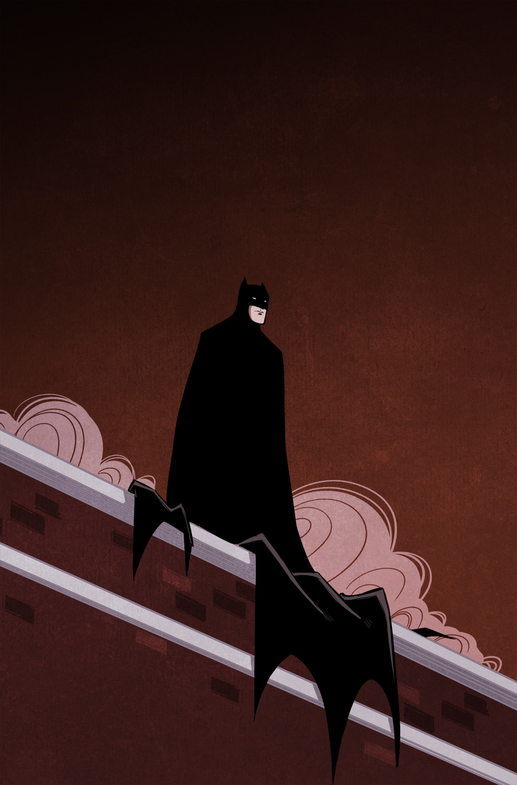

BATMAN
Illustration
Another personal project, this one born out of a desire to draw Batman because, well, he’s Batman. This was a morning warm up drawing, which are nice because they allow me to create without larger expectations. I know these drawings need to be completed quickly, so they become ideal candidates for experimentation.